Core Area · Research & Innovation
Applied AI research built for real-world impact.
This core area turns partner problems into validated AI pilots, prototypes, and deployment-ready solutions. It connects research discipline with business, education, community, and product needs.
The validation layer between ideas and deployment.
AIC uses applied research to test whether AI ideas can work in real settings before they become services, products, pilots, or venture opportunities. The emphasis is practical evidence, responsible design, and partner value.
AI needs real-world proof
Many AI concepts require real-world validation before they can be responsibly deployed. This core area validates ideas with partners before they scale.
Partners with practical problems
Designed for education organizations, SMEs, technology partners, researchers, faculty, students, and teams exploring applied AI pilots.
Validated pilots
Outputs include problem definitions, prototypes, pilot designs, testing evidence, governance review, and commercialization or deployment pathways.
Research streams tied to AIC's applied AI strategy.
Education AI
Student inquiry support, admissions workflows, AI literacy, faculty productivity, and responsible student-service automation.
SME AI Adoption
Workflow mapping, use-case validation, productivity measurement, employee adoption, and practical impact scorecards.
Responsible AI Governance
Practical governance templates, privacy and data rules, disclosure language, human oversight, risk scoring, and incident handling.
Agentic Workflow & Voice AI
Applied work connected to ALEBEX AI, including conversation design, workflow agents, knowledge-base testing, escalation, and safety evaluation.
A disciplined, deployment-first process.


We research AI that works in the real world, then help bring it there.